25+ Christmas Brunch Recipes for a Festive Holiday Morning
📌 Save to PinterestChristmas brunch is the slow, happy middle of the holiday: presents opened, coffee poured, and a table full of warm food that nobody has to rush. This roundup gathers twenty-five Christmas brunch recipes — eggs benedict and stratas, Dutch babies and shakshuka, pancakes, waffles, scones and pastries — for a festive holiday morning. Make the overnight bakes the night before, cook one fresh dish while everyone gathers, and let the morning stretch out.
How to plan a festive Christmas brunch
Pick one make-ahead bake, one egg dish, and one sweet griddle recipe, then round out the table with something light, like fruit or a simple toast. If guests arrive at different times, lean on dishes that hold well — stratas, frittatas and coffee cake stay warm in a low oven while latecomers catch up. And if you want the house to smell like Christmas before anyone sits down, start with cinnamon, nutmeg and maple, and let the coffee brew while the first dish bakes.
Good to know: Everything is written in American English, and measurements use US customary units — cups, tablespoons, and Fahrenheit — for cooks in the United States. Always follow safe food-handling guidance, and check labels for allergens when cooking for others.
Food safety: cook eggs until the whites and yolks are firm — egg dishes should reach 160°F (71°C). Cook sausage and chorizo to 160°F (71°C), and ground meat to 160°F (71°C). Refrigerate leftovers within 2 hours. Check with a food thermometer.
Benedicts & egg dishes
These are the showpieces of the brunch table — eggs benedict, overnight strata, shakshuka and frittatas that feed a crowd from one pan or dish.
1. Eggs Benedict with Hollandaise
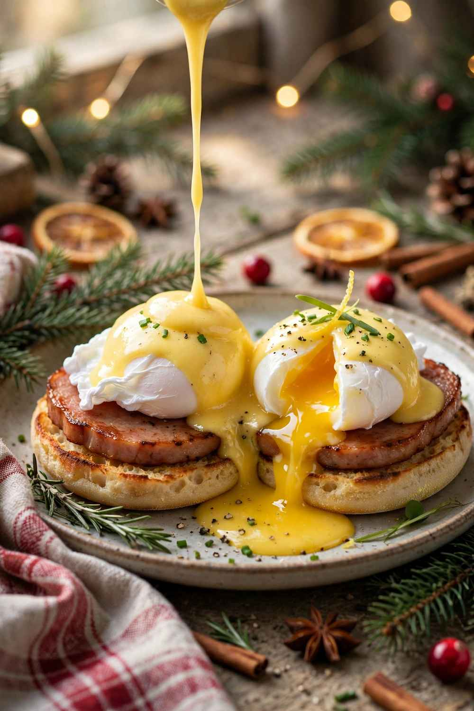
Toasted English muffins stack up with warm Canadian bacon, a poached egg, and a silky lemon hollandaise that pours over the top like golden silk. The yolk runs into the sauce, the muffin soaks up just enough, and every bite is rich, bright, and buttery. It is the kind of special breakfast that makes Christmas morning feel like a celebration.
Ingredients
- 4 English muffins
- 8 eggs
- 8 slices Canadian bacon
- 3 egg yolks
- 1/2 cup butter
- 1 tbsp lemon juice
Directions
- Split the muffins and toast until golden and crisp.
- Melt the butter in a small pan over low heat until just liquid. Keep it warm; do not let it brown.
- Warm the bacon in a dry skillet over medium heat for 1 minute per side, until lightly browned.
- Bring a wide pot of water to a gentle simmer. Crack each egg into a cup and slide it in.
- Poach the eggs for 3 minutes, until the whites are set and the yolks are soft. Lift out with a slotted spoon and drain.
- Whisk the yolks and lemon juice in a heatproof bowl over simmering water. Drizzle in the warm butter slowly, whisking constantly, until thick and glossy.
- Top each muffin half with bacon and a poached egg, then spoon the hollandaise over the top. Serve right away.
Food safety: cook eggs until the whites and yolks are firm — egg dishes should reach 160°F (71°C).
2. Christmas Morning Strata with Sausage and Cheddar
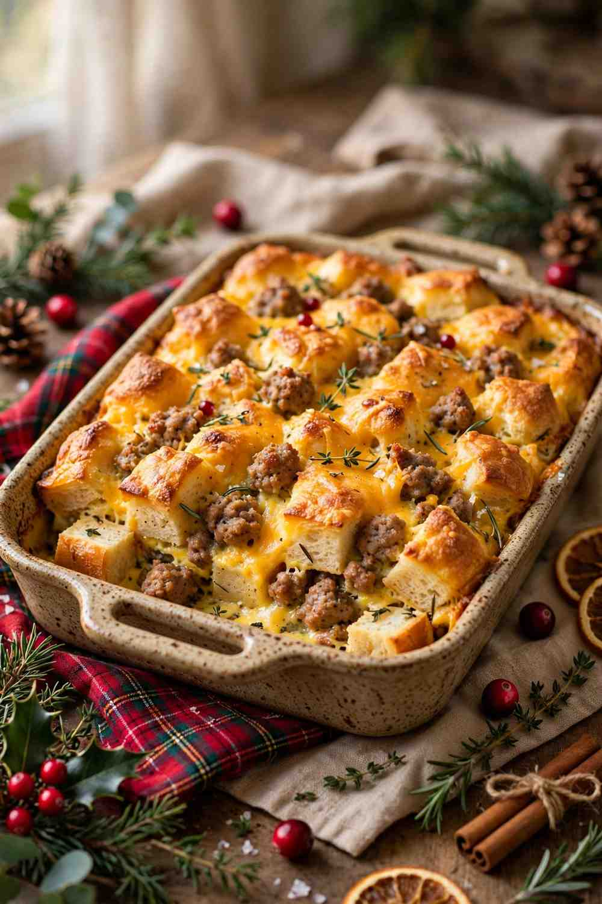
This strata is Christmas morning made easy: cubes of bread soak overnight in a savory egg custard with browned sausage and melted cheddar, then bake into a puffed, golden casserole. The top turns crisp while the middle stays soft and rich. Assemble it tonight, slide it into the oven tomorrow, and serve a warm, hearty breakfast with no morning rush.
Ingredients
- 8 cups cubed bread
- 1 lb sausage
- 2 cups shredded cheddar
- 8 eggs
- 2 cups milk
- 1 tsp mustard
Directions
- Brown the sausage in a large skillet over medium-high heat, breaking it into crumbles, for 8 to 10 minutes. Drain off the fat and set aside.
- Grease a 9x13-inch baking dish. Spread half the bread cubes in the dish, then layer half the sausage and half the cheddar over them.
- Repeat with the remaining bread, sausage, and cheddar for even layers.
- Whisk the eggs, milk, and mustard in a large bowl until smooth and fully combined.
- Pour the egg mixture evenly over the layers, pressing the bread down gently so every piece is soaked.
- Cover the dish tightly and refrigerate overnight, for at least 8 hours, so the bread absorbs the custard.
- In the morning, bake uncovered at 350°F for 45 minutes, until puffed, golden brown, and set in the center. Rest 10 minutes, then slice and serve.
Food safety: cook the sausage to 160°F (71°C) and bake until the eggs are set — egg dishes should reach 160°F (71°C).
3. Dutch Baby with Cranberries and Orange
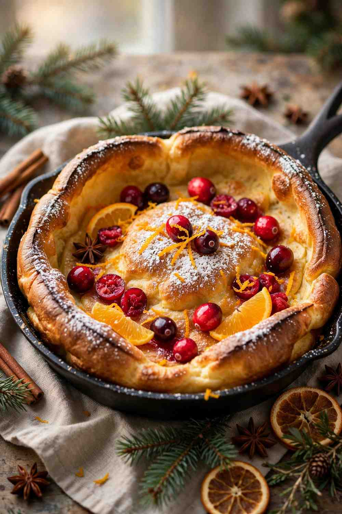
A Dutch baby puffs up in the oven like a golden cloud, with tart cranberries and bright orange zest baked into its custardy folds. The edges turn crisp and browned while the center stays soft and eggy. Dust it with powdered sugar, cut it into wedges, and serve it straight from the skillet while it is tall, warm, and dramatic.
Ingredients
- 3 eggs
- 3/4 cup flour
- 3/4 cup milk
- 1 cup cranberries
- 2 tbsp orange zest
- 3 tbsp butter
- powdered sugar
Directions
- Put a 10-inch cast iron skillet in the oven and preheat to 425°F so the pan is screaming hot.
- Blend the eggs, flour, and milk in a blender for 30 seconds, until completely smooth with no lumps.
- Stir the orange zest into the batter and set it aside while the oven finishes heating.
- Carefully pull the hot skillet from the oven and add the butter, swirling until it melts and coats the pan.
- Scatter the cranberries over the melted butter, then pour the batter over them in one smooth motion.
- Bake at 425°F for 18 minutes, until the pancake is deeply puffed, golden brown, and crisp at the edges. Do not open the oven early or it will fall.
- Slide the Dutch baby onto a board, dust generously with powdered sugar, and cut into wedges. Serve immediately.
4. Shakshuka with Feta and Spinach
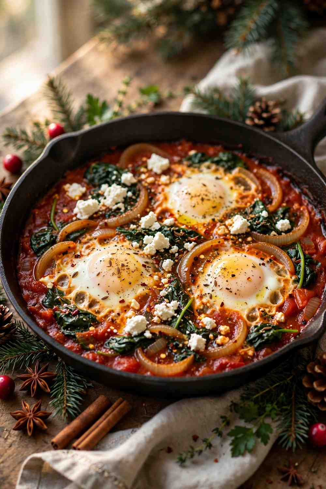
Eggs poach in a simmering sauce of crushed tomatoes, sweet onion, garlic, and warm cumin, with wilted spinach folded through and crumbled feta melting over the top. The sauce is rich and spiced, the yolks stay soft and runny, and warm bread is made for scooping it all up. It is a cozy one-pan brunch that feeds a crowd.
Ingredients
- 1 can (28 oz) crushed tomatoes
- 1 onion
- 2 garlic cloves
- 1 tsp cumin
- 6 eggs
- 2 cups spinach
- 1/2 cup feta
Directions
- Dice the onion and mince the garlic. Warm a large deep skillet over medium heat with a drizzle of oil.
- Cook the onion for 5 minutes until soft, then add the garlic and cumin and cook 1 minute more until fragrant.
- Pour in the crushed tomatoes and simmer for 10 minutes, stirring now and then, until the sauce thickens slightly.
- Stir in the spinach a handful at a time, letting each batch wilt before adding the next.
- Use a spoon to make 6 small wells in the sauce, then crack an egg into each well.
- Cover the skillet and cook for 8 minutes over low heat, until the egg whites are set and the yolks are still soft.
- Crumble the feta over the top and serve straight from the pan with warm bread for scooping.
Food safety: cook eggs until the whites and yolks are firm.
5. Lobster and Asparagus Frittata
Sweet lobster meat and tender asparagus fold into a golden egg frittata with melted Gruyère and fresh chives, baked until set and lightly puffed. It tastes like a special occasion: rich, delicate, and a little bit fancy, but it comes together in one pan. Slice it into wedges and serve it warm for a Christmas brunch that feels truly celebratory.
Ingredients
- 8 eggs
- 1 cup cooked lobster meat
- 1 cup asparagus pieces
- 1/2 cup Gruyère
- 2 tbsp butter
- 1 tbsp chives
Directions
- Preheat the oven to 375°F. Trim the asparagus and cut it into 1-inch pieces.
- Melt the butter in a 10-inch ovenproof skillet over medium heat. Add the asparagus and cook for 3 minutes until bright green and just tender.
- Whisk the eggs in a large bowl until the yolks and whites are fully combined, then season lightly.
- Stir the lobster meat and Gruyère into the eggs, then pour the mixture over the asparagus in the skillet.
- Cook on the stove for 3 minutes, lifting the edges gently so the uncooked egg flows underneath.
- Transfer the skillet to the oven and bake at 375°F for 10 minutes, until the frittata is puffed, golden, and set in the center.
- Rest for 5 minutes, sprinkle with chopped chives, and slice into wedges. Serve warm.
Food safety: cook until the eggs are set — egg dishes should reach 160°F (71°C).
Pancakes, waffles & French toast
Sweet and savory brunch plates from the griddle and the skillet — stuffed French toast, fluffy pancakes, a crispy hash, flaky biscuits and spiced waffles.
6. Stuffed French Toast with Cream Cheese and Berries
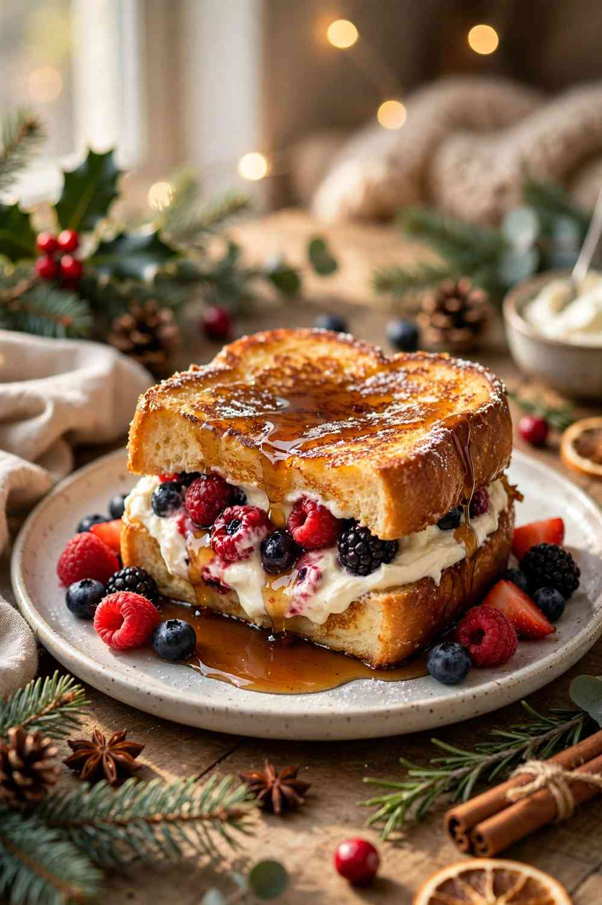
Thick slices of brioche are stuffed with sweet cream cheese and juicy mixed berries, dipped in a vanilla custard, and pan-fried until golden and crisp outside with a soft, creamy center. A drizzle of maple syrup and extra berries on top make it taste like dessert for breakfast. It is rich, fruity, and made for a slow Christmas morning.
Ingredients
- 8 slices brioche
- 8 oz cream cheese
- 2 cups mixed berries
- 4 eggs
- 1 cup milk
- 1 tsp vanilla
- maple syrup
Directions
- Let the cream cheese soften at room temperature for 20 minutes so it spreads easily.
- Spread cream cheese generously over 4 slices of brioche, scatter berries over the cream cheese, and top with the remaining 4 slices to make 4 sandwiches.
- Whisk the eggs, milk, and vanilla in a shallow dish until smooth and fully combined.
- Melt a knob of butter in a large skillet over medium heat until it foams.
- Dip each sandwich into the egg mixture, letting it soak for 15 seconds per side so the bread is coated but not soggy.
- Cook the sandwiches in the butter for 3 minutes per side, until deep golden brown and crisp at the edges.
- Serve warm with maple syrup and a spoonful of extra berries on top.
7. Lemon Ricotta Pancakes with Blueberries
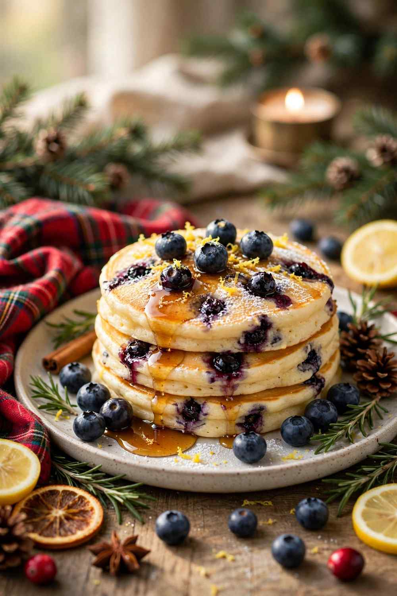
These pancakes are light, fluffy, and bright with lemon, thanks to creamy ricotta folded into the batter and fresh blueberries that burst as they cook. The edges turn lightly golden while the centers stay soft and tender. Stack them high, pour over warm maple syrup, and let the sweet berries and citrus wake up the whole Christmas table.
Ingredients
- 1 1/2 cups flour
- 1 cup ricotta
- 2 eggs
- 3/4 cup milk
- 2 tbsp lemon zest
- 1 cup blueberries
- maple syrup
Directions
- Whisk the flour in a large bowl, then stir in the ricotta, eggs, milk, and lemon zest until just combined. A few small lumps are fine.
- Gently fold in the blueberries, taking care not to crush them.
- Heat a buttered griddle or large skillet over medium heat until a drop of water sizzles on the surface.
- Scoop 1/4 cup of batter per pancake onto the griddle, leaving space between them so they spread evenly.
- Cook for 2 minutes per side, until bubbles form on the surface, the edges look set, and the underside is golden brown.
- Flip each pancake once and cook 2 minutes more until golden and cooked through.
- Keep the finished pancakes warm in a low oven while you cook the rest, then stack and serve with warm maple syrup.
8. Sweet Potato Hash with Fried Eggs
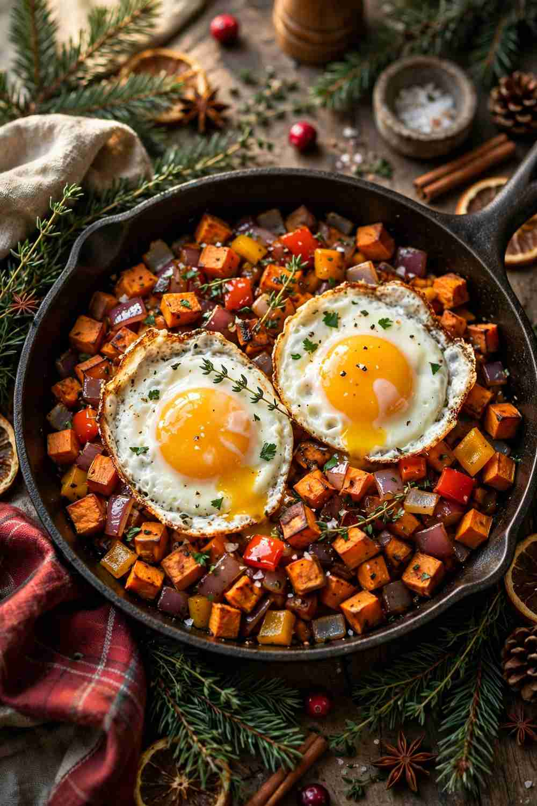
Crispy cubes of sweet potato, soft onion, and sweet bell pepper cook together with smoky paprika until golden at the edges, then fried eggs settle into the pan with runny yolks. It is hearty and full of warm spice, and the yolks make their own sauce when you break them. A one-pan brunch that tastes like a holiday morning.
Ingredients
- 2 large sweet potatoes
- 1 onion
- 1 bell pepper
- 4 eggs
- 2 tbsp olive oil
- 1 tsp smoked paprika
Directions
- Peel the sweet potatoes and dice them into 1/2-inch cubes. Dice the onion and bell pepper the same size.
- Heat the olive oil in a large skillet over medium-high heat until it shimmers.
- Add the sweet potatoes, onion, and bell pepper with the smoked paprika, and stir to coat everything in oil and spice.
- Cook for about 15 minutes, stirring only now and then, until the potatoes are crisp at the edges and tender inside.
- Use a spoon to make 4 small wells in the hash, then crack an egg into each well.
- Cover the skillet and cook for 4 minutes over medium-low heat, until the egg whites are set and the yolks are still soft.
- Season with salt and pepper and serve straight from the pan, spooning the hash and an egg onto each plate.
Food safety: cook eggs until the whites and yolks are firm.
9. Cheddar Chive Biscuits with Honey Butter
These biscuits bake up tall, flaky, and golden, with melted cheddar and fresh chives folded through the dough and a drizzle of honey butter on top. They are buttery and sharp, soft inside and crisp at the edges, and they practically beg to be pulled apart while still warm. Set them out in a basket and watch them disappear.
Ingredients
- 2 cups flour
- 1 tbsp baking powder
- 1/2 cup butter
- 1 cup shredded cheddar
- 2 tbsp chives
- 3/4 cup milk
- 2 tbsp honey
Directions
- Preheat the oven to 425°F and line a baking sheet with parchment paper.
- Whisk the flour and baking powder in a large bowl. Cut the cold butter into small cubes.
- Cut the butter into the flour with a pastry cutter or your fingertips until the mixture looks like coarse crumbs.
- Stir in the shredded cheddar, chopped chives, and milk, mixing just until a soft, shaggy dough forms. Do not overmix.
- Drop large spoonfuls of dough onto the baking sheet, spacing them about 2 inches apart.
- Bake at 425°F for 14 minutes, until the biscuits are puffed, golden brown, and firm at the edges.
- While the biscuits bake, stir the honey into softened butter until smooth. Serve the biscuits warm with the honey butter.
- Split the biscuits open and spread generously with honey butter before eating.
10. Pumpkin Waffles with Maple Cream
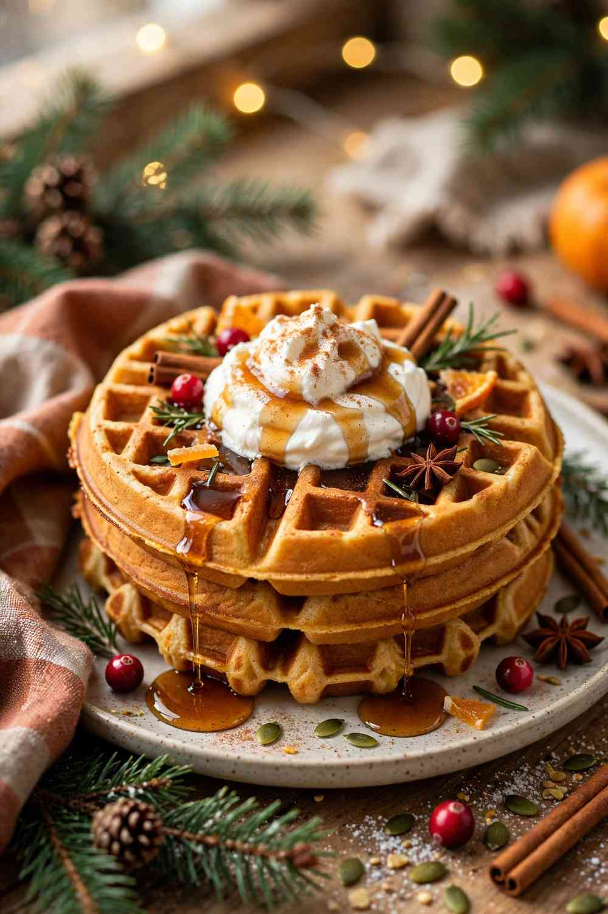
Crisp, spiced pumpkin waffles come off the iron with deep golden ridges, warm with pumpkin pie spice and a touch of brown sugar. A cloud of whipped cream and a slow pour of maple syrup turn them into a Christmas morning centerpiece. They are cozy, fragrant, and just sweet enough, with a soft inside under the crunch.
Ingredients
- 2 cups flour
- 1 cup pumpkin puree
- 2 eggs
- 1 cup milk
- 2 tbsp brown sugar
- 1 tsp pumpkin pie spice
- 1 cup whipped cream
- maple syrup
Directions
- Preheat a waffle iron and lightly grease it with butter or cooking spray.
- Whisk the flour, pumpkin puree, eggs, milk, brown sugar, and pumpkin pie spice in a large bowl until smooth and fully combined.
- Let the batter rest for 5 minutes so the flour hydrates and the waffles cook up tender.
- Pour about 3/4 cup of batter onto the hot waffle iron, spreading it gently toward the edges.
- Close the lid and cook for 4 to 5 minutes, until the waffle is deep golden, crisp at the edges, and releases easily.
- Lift the waffle out carefully and keep it warm on a rack in a low oven while you cook the rest.
- Serve each waffle with a generous dollop of whipped cream and a drizzle of warm maple syrup.
Scones, sandwiches & frittatas
The middle of the table — a bright frittata, tender scones, chocolate French toast, banana pancakes and a warm breakfast sandwich.
11. Asparagus and Goat Cheese Frittata
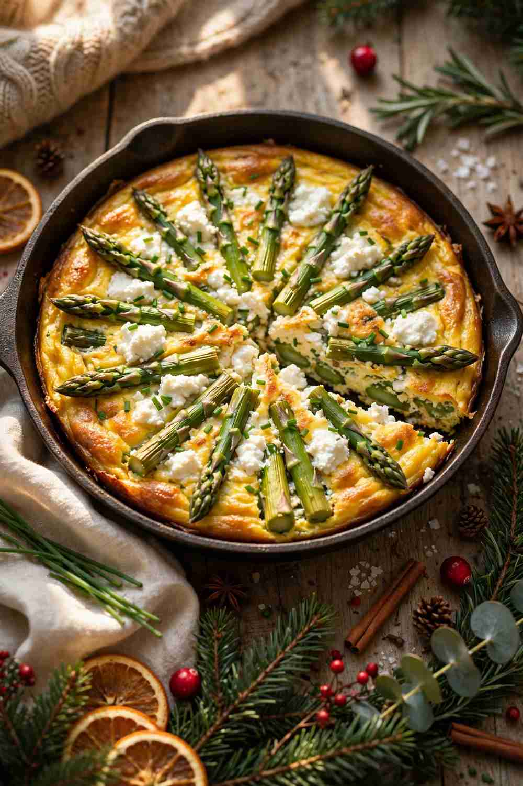
Tender asparagus and tangy goat cheese melt into a golden egg frittata that is light, fresh, and just a little bit elegant. The eggs puff in the oven, the cheese turns creamy in warm pockets, and fresh chives finish it with a gentle onion bite. Slice it into wedges for a brunch that feels bright and special without any fuss.
Ingredients
- 8 eggs
- 1 cup asparagus pieces
- 4 oz goat cheese
- 2 tbsp olive oil
- 1 tbsp chives
- salt and pepper
Directions
- Preheat the oven to 375°F. Trim the asparagus and cut it into 1-inch pieces.
- Heat the olive oil in a 10-inch ovenproof skillet over medium heat.
- Add the asparagus and cook for 3 minutes, until bright green and just tender.
- Whisk the eggs in a large bowl with salt and pepper until the yolks and whites are fully combined.
- Pour the eggs over the asparagus and crumble the goat cheese evenly over the top.
- Cook on the stove for 3 minutes, lifting the edges so the uncooked egg flows underneath and starts to set.
- Transfer the skillet to the oven and bake at 375°F for 10 minutes, until the frittata is puffed and set in the center.
- Rest for 5 minutes, sprinkle with chopped chives, and slice into wedges. Serve warm.
Food safety: cook until the eggs are set — egg dishes should reach 160°F (71°C).
12. Blueberry Lemon Scones
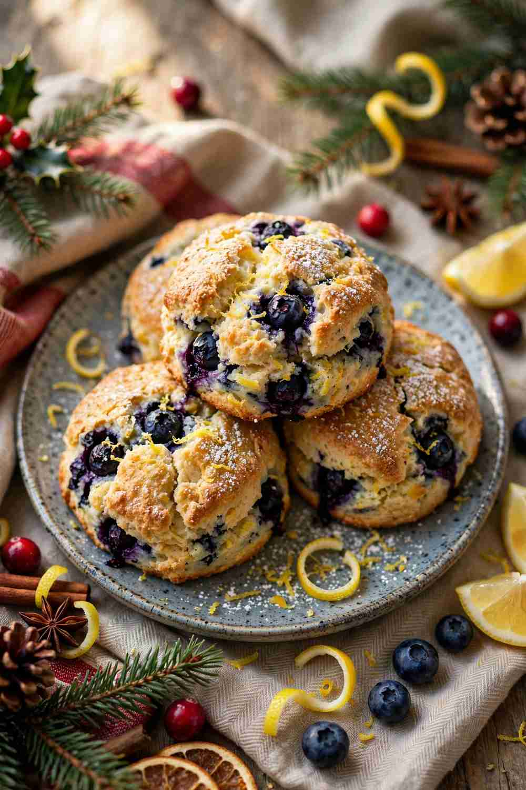
These scones are tender and crumbly, studded with juicy blueberries and bright with lemon zest, with a golden top and a soft, buttery middle. They break apart in flakes, taste of citrus and summer berries, and are at their best still warm from the oven with butter or clotted cream. A simple, pretty addition to the Christmas brunch table.
Ingredients
- 2 cups flour
- 1/3 cup sugar
- 1 tbsp baking powder
- 1/2 cup cold butter
- 1 cup blueberries
- 2 tbsp lemon zest
- 2/3 cup cream
Directions
- Preheat the oven to 400°F and line a baking sheet with parchment paper.
- Whisk the flour, sugar, and baking powder in a large bowl.
- Cut the cold butter into small cubes and rub it into the flour with your fingertips until the mixture looks like coarse crumbs.
- Gently fold in the blueberries and lemon zest, taking care not to crush the berries.
- Pour in the cream and stir just until a soft dough comes together. Do not overmix or the scones will turn tough.
- Pat the dough into a round about 1 inch thick on a floured surface, then cut it into 8 wedges.
- Place the wedges on the baking sheet, spacing them 2 inches apart, and bake at 400°F for 18 minutes until golden.
- Cool for 5 minutes on the pan, then serve warm with butter or clotted cream.
13. Chocolate Hazelnut Stuffed French Toast
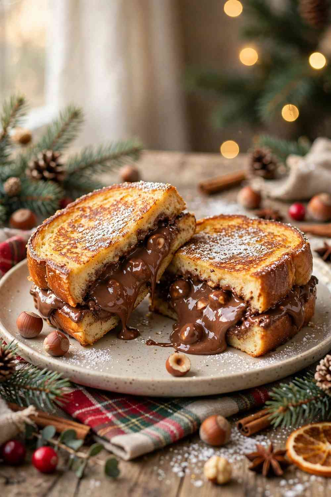
Thick brioche slices are stuffed with rich chocolate hazelnut spread, dipped in vanilla custard, and pan-fried until golden and crisp with a warm, melty chocolate center. A dusting of powdered sugar makes it look like snow on Christmas morning. It is indulgent, cozy, and tastes like the best kind of holiday treat.
Ingredients
- 8 slices brioche
- 1/2 cup chocolate hazelnut spread
- 4 eggs
- 1 cup milk
- 1 tsp vanilla
- powdered sugar
- butter
Directions
- Spread the chocolate hazelnut spread generously over 4 slices of brioche, then top with the remaining 4 slices to make 4 sandwiches.
- Whisk the eggs, milk, and vanilla in a shallow dish until smooth and fully combined.
- Melt a knob of butter in a large skillet over medium heat until it foams.
- Dip each sandwich into the egg mixture, letting it soak for 15 seconds per side so the bread is coated but not soggy.
- Cook the sandwiches in the butter for 3 minutes per side, until deep golden brown and crisp at the edges.
- Transfer to a plate and dust generously with powdered sugar while still warm.
- Serve right away, with extra berries or maple syrup if you like.
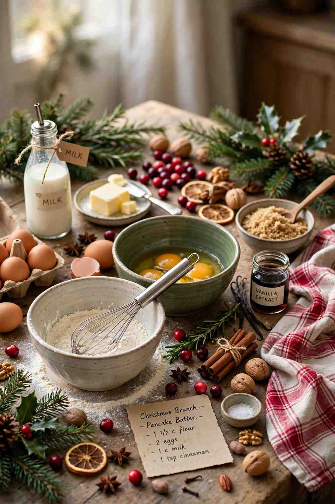
14. Banana Walnut Pancakes
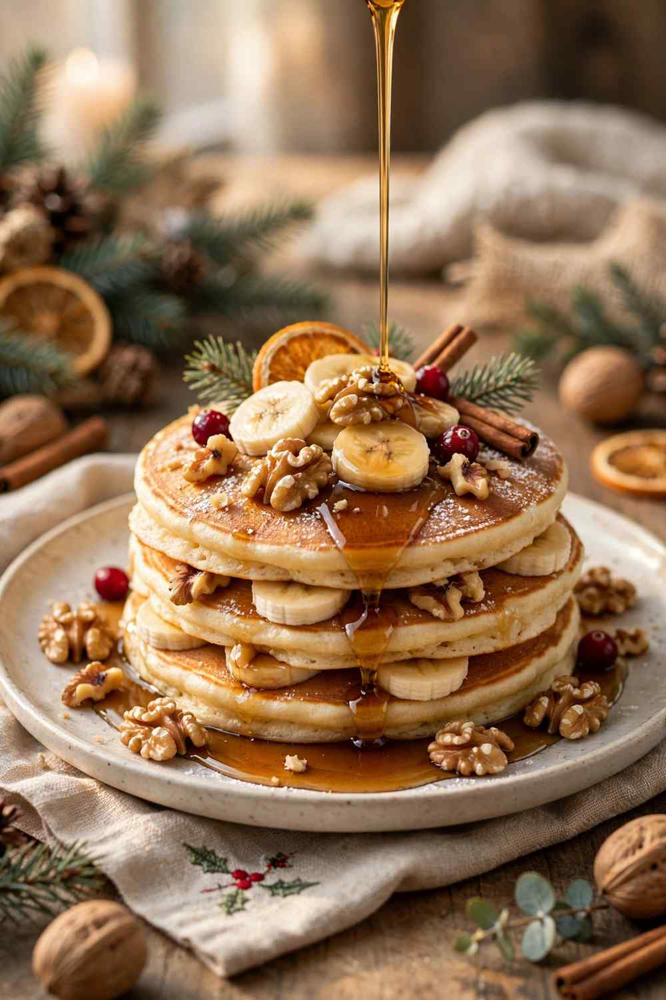
Ripe bananas make these pancakes naturally sweet and extra fluffy, with crunchy walnuts folded through the batter and a hint of vanilla in every bite. They come off the griddle golden and fragrant, with soft centers and lightly crisp edges. Pour over warm maple syrup and serve a stack that tastes like a cozy, homemade Christmas morning.
Ingredients
- 1 1/2 cups flour
- 2 ripe bananas
- 2 eggs
- 3/4 cup milk
- 1/2 cup chopped walnuts
- 1 tsp baking powder
- maple syrup
Directions
- Mash the bananas in a large bowl until mostly smooth, with a few small lumps left for texture.
- Whisk in the flour, eggs, milk, and baking powder until just combined. A few small lumps are fine; do not overmix.
- Gently fold in the chopped walnuts so they are spread evenly through the batter.
- Heat a buttered griddle or large skillet over medium heat until a drop of water sizzles on the surface.
- Scoop 1/4 cup of batter per pancake onto the griddle, leaving space between them so they spread evenly.
- Cook for 2 minutes per side, until bubbles form on the surface, the edges look set, and the underside is golden brown.
- Flip once and cook 2 minutes more until golden and cooked through. Serve warm with maple syrup.
15. Roasted Tomato and Mozzarella Breakfast Sandwich
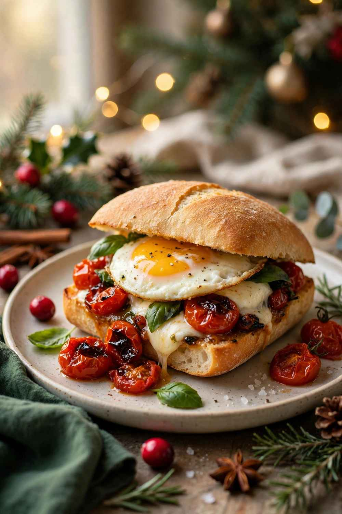
Sweet roasted cherry tomatoes, creamy fresh mozzarella, a sunny-side-up egg, and fresh basil stack up on a warm ciabatta roll for a breakfast sandwich that tastes like sunshine. The tomatoes turn jammy in the oven, the cheese melts just enough, and the runny yolk ties it all together. It is fresh, warm, and wonderfully messy.
Ingredients
- 4 ciabatta rolls
- 2 cups roasted cherry tomatoes
- 8 oz fresh mozzarella
- 4 eggs
- basil leaves
- olive oil
Directions
- Preheat the oven to 400°F. Halve the cherry tomatoes and toss them with a drizzle of olive oil.
- Spread the tomatoes on a baking sheet and roast at 400°F for 15 minutes, until soft, jammy, and lightly blistered.
- While the tomatoes roast, tear the mozzarella into slices and set the basil leaves aside.
- Heat a drizzle of olive oil in a skillet over medium heat and fry the eggs sunny-side up for 3 minutes, until the whites are set and the yolks are still runny.
- Split the ciabatta rolls and toast them lightly, cut-side down, in the same skillet until golden.
- Layer the roasted tomatoes, mozzarella, a fried egg, and basil leaves onto each roll.
- Close the sandwiches and serve warm, with the yolk ready to run.
Hearty plates & bakes
For the heartiest appetites — crispy hash, warm toast, eggnog waffles, coffee cake and spicy breakfast tacos.
16. Corned Beef Hash with Poached Eggs
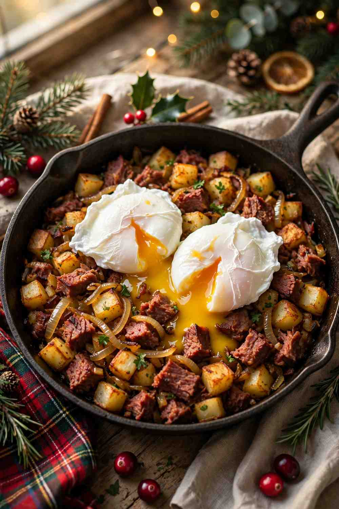
Crispy potatoes, savory corned beef, and sweet onion fry together in butter until golden at the edges, then a soft poached egg crowns each serving with a runny yolk. It is hearty, salty, and deeply satisfying — the kind of old-fashioned breakfast that warms you from the inside on a cold Christmas morning.
Ingredients
- 2 cups diced corned beef
- 3 potatoes
- 1 onion
- 4 eggs
- 2 tbsp butter
- 1 tbsp vinegar
Directions
- Peel the potatoes and dice them into 1/2-inch cubes. Dice the onion the same size so everything cooks evenly.
- Melt the butter in a large skillet over medium-high heat until it foams.
- Add the potatoes, onion, and diced corned beef, spreading them in an even layer.
- Cook for about 15 minutes, pressing the hash down with a spatula and stirring only now and then, until the potatoes are crisp and golden.
- While the hash cooks, bring a pot of water to a gentle simmer and stir in the vinegar.
- Crack each egg into a small cup and slide it into the simmering water. Poach for 3 minutes, until the whites are set and the yolks are soft.
- Lift the eggs out with a slotted spoon, drain briefly, and set one on each serving of hash. Serve hot.
Food safety: cook eggs until the whites and yolks are firm.
17. Pear and Gorgonzola Toast with Honey
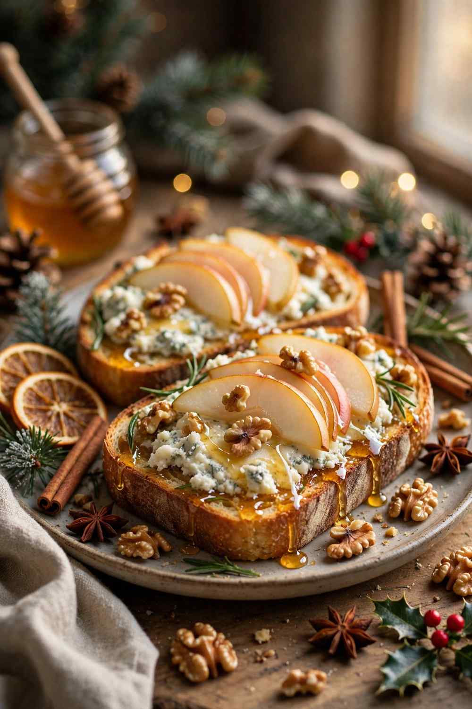
Buttery toasted sourdough holds sweet sliced pears and tangy Gorgonzola, finished with a drizzle of honey and crunchy walnuts. It is sweet, salty, creamy, and crisp all at once — a little bit fancy, but ready in minutes. Serve it warm as a light, elegant bite beside the bigger dishes on the Christmas brunch table.
Ingredients
- 4 slices sourdough
- 2 pears
- 4 oz Gorgonzola
- 2 tbsp honey
- 1/4 cup walnuts
- butter
Directions
- Core the pears and slice them thinly. Crumble the Gorgonzola and roughly chop the walnuts.
- Melt a knob of butter in a large skillet over medium heat.
- Toast the sourdough in the butter for 2 minutes per side, until golden brown and crisp at the edges.
- Lay the warm toast on a board and top each slice with overlapping pear slices.
- Crumble the Gorgonzola over the pears so it softens slightly from the warmth of the toast.
- Drizzle with honey and sprinkle with the chopped walnuts.
- Serve warm, with the cheese just starting to melt into the pears.
18. Eggnog Waffles with Nutmeg Cream
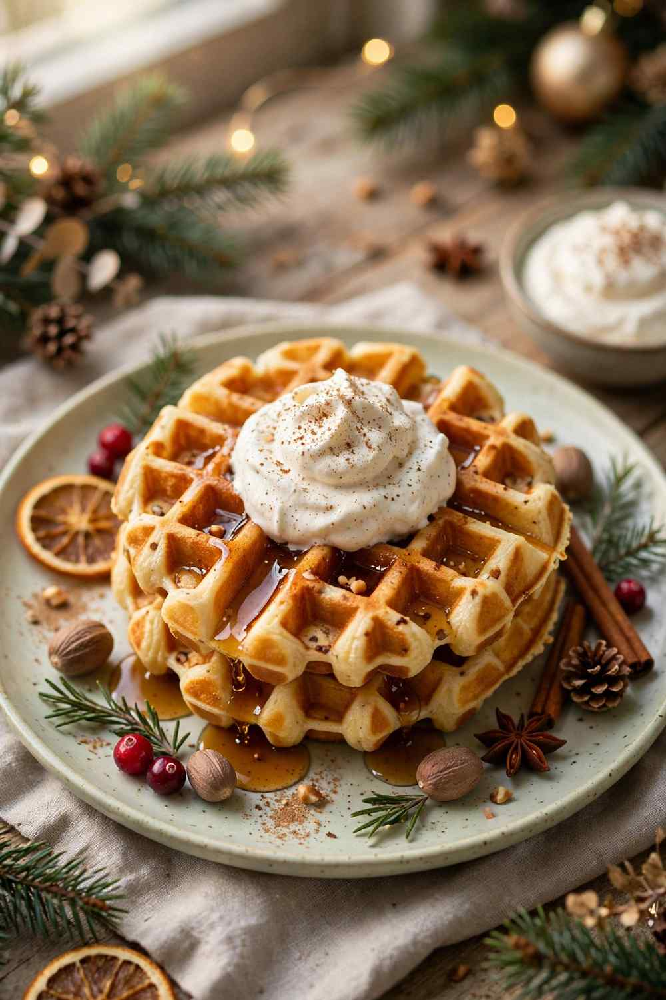
These waffles taste like Christmas in every bite: rich eggnog and warm nutmeg folded into a crisp, golden batter, topped with a cloud of whipped cream and maple syrup. They come off the iron with deep ridges and a soft, custardy middle. Serve them warm and let the whole table smell like the holidays.
Ingredients
- 2 cups flour
- 1 cup eggnog
- 2 eggs
- 1/4 cup melted butter
- 1 tsp nutmeg
- 1 cup whipped cream
- maple syrup
Directions
- Preheat a waffle iron and lightly grease it with butter or cooking spray.
- Whisk the flour, eggnog, eggs, melted butter, and nutmeg in a large bowl until smooth and fully combined.
- Let the batter rest for 5 minutes so the flour hydrates and the waffles cook up tender.
- Pour about 3/4 cup of batter onto the hot waffle iron, spreading it gently toward the edges.
- Close the lid and cook for 4 to 5 minutes, until the waffle is deep golden, crisp at the edges, and releases easily.
- Lift the waffle out carefully and keep it warm on a rack in a low oven while you cook the rest.
- Serve each waffle with a generous dollop of whipped cream and a drizzle of warm maple syrup.
19. Raspberry Almond Coffee Cake
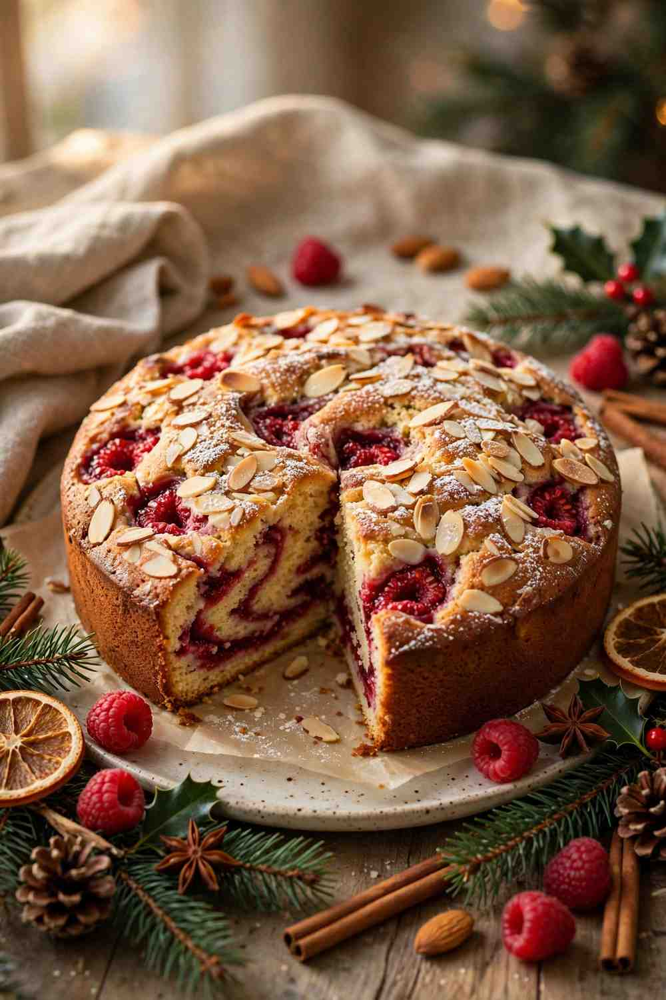
A tender, buttery coffee cake swirled with tart raspberries and topped with sliced almonds, scented with almond extract and baked until golden. The berries soften into jammy pockets, the crumb stays moist from the sour cream, and the almond topping turns crisp. It is the perfect slice with a cup of coffee on a slow Christmas morning.
Ingredients
- 2 cups flour
- 1 cup sugar
- 1/2 cup butter
- 2 eggs
- 1 cup sour cream
- 1 cup raspberries
- 1/2 cup sliced almonds
- 1 tsp almond extract
Directions
- Preheat the oven to 350°F and grease a 9-inch round cake pan.
- Cream the butter and sugar in a large bowl until light and fluffy, about 3 minutes.
- Beat in the eggs one at a time, then stir in the almond extract.
- Fold in the flour and sour cream in turns, mixing just until smooth. Do not overmix.
- Spread half the batter into the pan, scatter half the raspberries over it, then spread the remaining batter on top.
- Swirl the remaining raspberries through the top layer with a knife, then sprinkle the sliced almonds evenly over the surface.
- Bake at 350°F for 45 minutes, until a toothpick in the center comes out clean and the top is golden.
- Cool in the pan for 10 minutes, then slice and serve warm or at room temperature.
20. Chorizo and Potato Breakfast Tacos
Spicy chorizo and crispy potatoes scramble together with eggs, then pile into warm corn tortillas with melted cheese, fresh salsa, and cilantro. They are smoky, a little bit spicy, and wonderfully hands-on — the kind of breakfast that gets everyone around the table building their own. Serve them hot with extra salsa on the side.
Ingredients
- 1/2 lb chorizo
- 2 potatoes
- 6 eggs
- 8 corn tortillas
- 1/2 cup shredded cheese
- salsa
- cilantro
Directions
- Peel the potatoes and dice them into 1/2-inch cubes.
- Brown the chorizo in a large skillet over medium-high heat for 5 minutes, breaking it into small crumbles.
- Add the diced potatoes to the chorizo and cook for 10 to 12 minutes, stirring now and then, until the potatoes are crisp and golden.
- Whisk the eggs in a bowl until the yolks and whites are fully combined.
- Pour the eggs into the skillet and scramble gently for 3 minutes, until just set and still soft.
- Warm the tortillas in a dry skillet for 30 seconds per side, until soft and pliable.
- Fill each tortilla with the chorizo and egg mixture, then top with shredded cheese, salsa, and fresh cilantro. Serve hot.
Food safety: cook the chorizo to 160°F (71°C).
Lighter plates & sweet finishes
End the brunch on a bright note — baked grapefruit, maple bacon pancakes, a citrusy loaf, a savory galette and a chocolatey bread pudding.
21. Baked Grapefruit with Honey and Pistachios
Grapefruit halves bake until warm and fragrant, their segments loosened and drizzled with honey and a pinch of cinnamon, then topped with crunchy pistachios and a cool spoonful of Greek yogurt. It is bright, sweet, and a little bit tangy — a light, pretty start to a rich Christmas brunch.
Ingredients
- 2 grapefruits
- 2 tbsp honey
- 1/4 cup chopped pistachios
- 1 tsp cinnamon
- Greek yogurt
Directions
- Preheat the oven to 375°F. Halve the grapefruits crosswise.
- Run a small knife around each segment to loosen it from the membrane, so the segments lift easily with a spoon, keeping the halves intact.
- Set the grapefruit halves cut-side up in a baking dish.
- Drizzle each half evenly with honey and sprinkle with cinnamon.
- Bake at 375°F for 12 minutes, until the grapefruit is warm through and the tops are lightly caramelized.
- Remove from the oven and sprinkle the chopped pistachios over the warm fruit.
- Top each half with a spoonful of Greek yogurt and serve warm.
22. Maple Bacon Pancakes
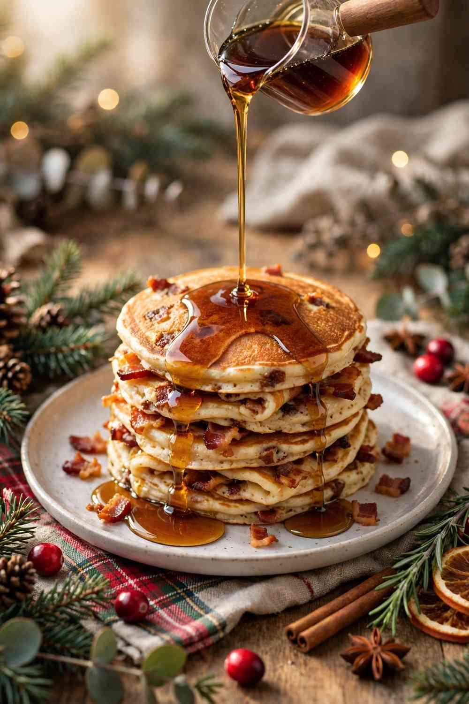
Smoky, crumbled bacon folds into fluffy pancakes sweetened with maple syrup, so every bite is salty, sweet, and warm. They come off the griddle golden with crisp bacon edges, and a slow pour of maple syrup over the stack makes them taste like a diner breakfast dressed up for Christmas morning.
Ingredients
- 1 1/2 cups flour
- 6 slices cooked bacon
- 2 eggs
- 3/4 cup milk
- 2 tbsp maple syrup
- 1 tsp baking powder
Directions
- Crumble the cooked bacon into small pieces and set aside.
- Whisk the flour, eggs, milk, maple syrup, and baking powder in a large bowl until just combined. A few small lumps are fine.
- Gently fold the crumbled bacon into the batter so it is spread evenly.
- Heat a buttered griddle or large skillet over medium heat until a drop of water sizzles on the surface.
- Scoop 1/4 cup of batter per pancake onto the griddle, leaving space between them so they spread evenly.
- Cook for 2 minutes per side, until bubbles form on the surface, the edges look set, and the underside is golden brown.
- Flip once and cook 2 minutes more until golden and cooked through. Serve warm with maple syrup.
23. Orange and Cranberry Breakfast Bread
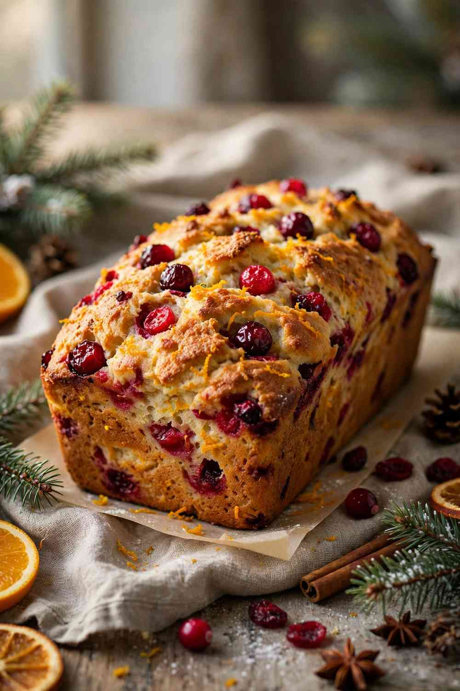
A tender, citrusy loaf studded with tart cranberries and bright orange zest, baked until golden with a lightly crisp top. The crumb is soft and buttery, the berries burst into jammy pockets, and a slice with butter and coffee is all a Christmas morning needs. It also toasts beautifully the next day.
Ingredients
- 2 cups flour
- 1 cup sugar
- 1/2 cup butter
- 2 eggs
- 1 cup fresh cranberries
- 2 tbsp orange zest
- 1/2 cup orange juice
Directions
- Preheat the oven to 350°F and grease a 9x5-inch loaf pan.
- Cream the butter and sugar in a large bowl until light and fluffy, about 3 minutes.
- Beat in the eggs one at a time, then stir in the orange zest and orange juice.
- Fold in the flour just until combined, then gently fold in the cranberries. Do not overmix.
- Spoon the batter into the loaf pan and smooth the top.
- Bake at 350°F for 50 minutes, until a toothpick in the center comes out clean and the top is golden brown.
- Cool in the pan for 10 minutes, then turn out onto a rack and cool completely before slicing.
24. Herbed Goat Cheese and Tomato Galette
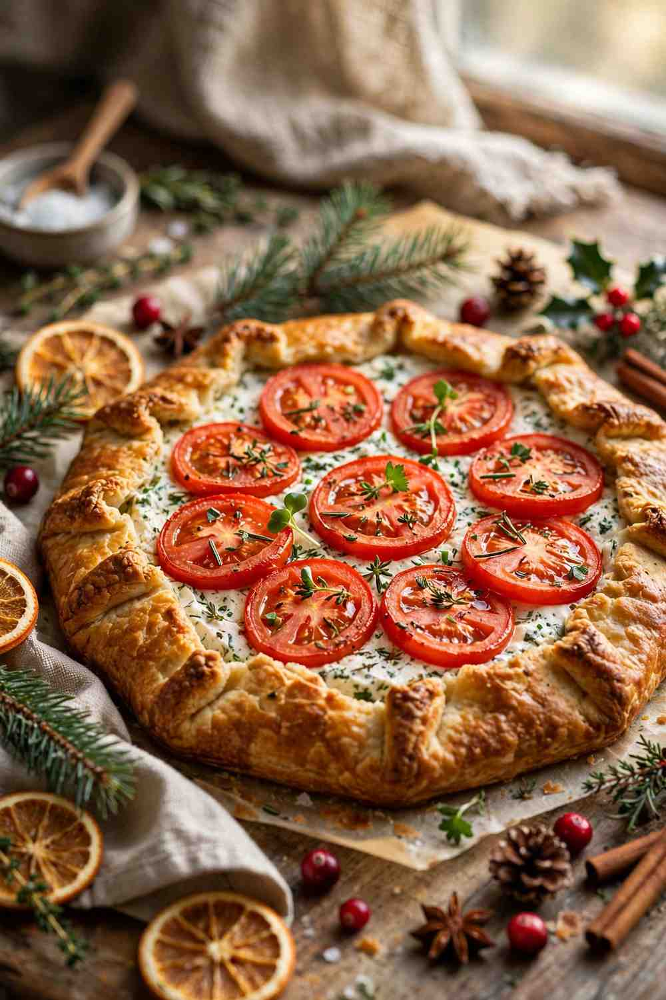
A flaky, rustic galette holds creamy herbed goat cheese and layers of ripe sliced tomatoes, with the crust folded over the edges and baked until golden. It is savory, tangy, and a little bit elegant, and it slices beautifully for sharing. Serve it warm as the savory centerpiece of a Christmas brunch spread.
Ingredients
- 1 sheet pie dough
- 4 oz goat cheese
- 2 cups sliced tomatoes
- 2 tbsp herbs
- 1 egg
- olive oil
Directions
- Preheat the oven to 400°F and line a baking sheet with parchment paper.
- Unroll the pie dough onto the baking sheet and spread the goat cheese over the center, leaving a 2-inch border all around.
- Layer the sliced tomatoes over the goat cheese and sprinkle with the herbs and a drizzle of olive oil.
- Fold the edges of the dough up and over the filling, pleating as you go to make a rustic border.
- Beat the egg and brush it over the folded crust so it bakes up golden and glossy.
- Bake at 400°F for 25 minutes, until the crust is deep golden brown and the tomatoes are soft.
- Rest for 5 minutes, then slice into wedges and serve warm.
25. Chocolate Croissant Bread Pudding
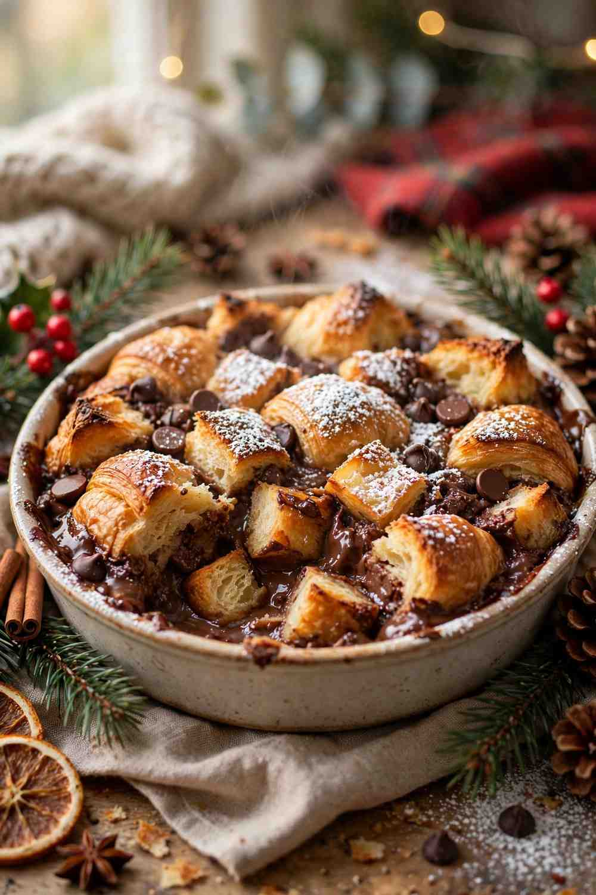
Buttery croissants soak in a sweet chocolate custard, studded with chocolate chips, then bake into a warm, puffy pudding with crisp golden edges and a soft, gooey center. A dusting of powdered sugar makes it look like snow. It is rich, chocolatey, and made for a slow, indulgent Christmas morning.
Ingredients
- 6 croissants
- 4 eggs
- 2 cups milk
- 1/2 cup sugar
- 1/2 cup chocolate chips
- 1 tsp vanilla
- powdered sugar
Directions
- Preheat the oven to 350°F and grease a 9x13-inch baking dish.
- Tear the croissants into bite-size pieces and spread them evenly in the dish.
- Whisk the eggs, milk, sugar, and vanilla in a large bowl until smooth and fully combined.
- Pour the custard evenly over the croissants, pressing them down gently so every piece is soaked.
- Sprinkle the chocolate chips evenly over the top.
- Let the dish rest for 10 minutes so the bread absorbs the custard.
- Bake at 350°F for 35 minutes, until puffed, golden brown, and set in the center.
- Rest for 5 minutes, dust with powdered sugar, and serve warm.
Food safety: bake until set — egg dishes should reach 160°F (71°C).
Make-ahead & serving tips
Assemble the strata and the bread pudding the night before so Christmas morning starts with the oven, not the mixing bowl. Bake egg dishes in the center of the oven and let them rest for 5 to 10 minutes before slicing so they hold together. Keep pancakes and waffles warm on a rack in a low oven while you cook the next batch, and set out toppings — maple syrup, powdered sugar, berries, butter and honey — so everyone builds their own plate. Most of these recipes keep well: store leftovers covered in the fridge for up to 3 days, and reheat gently in the oven or microwave.
Related articles
More roundups from the same table:
- 25+ Christmas Breakfast Recipes for a Cozy Holiday Morning — casseroles, pancakes, cinnamon rolls and make-ahead bakes for Christmas Day.
- 25+ Christmas Salmon Recipes for a Festive Holiday Dinner — glazed, roasted, crusted and smoked salmon mains for Christmas Day.
- 25+ Healthy Christmas Recipes for a Lighter Holiday Table — fresh salads, roasted vegetables, lean mains and light desserts.
- 25+ Christmas Cake Recipes for a Sweet Holiday Table — yule logs, layer cakes, bundts and pound cakes for Christmas Day.
Keep exploring
- Browse the Breakfast & Brunch roundups — slow mornings and weekend brunch tables.
- Browse all six categories — breakfast, lunch and dinner, desserts, air fryer, healthy recipes, and appetizers.
- More about the kitchen — what The Tasty Recipe Co is and how it works.
About The Tasty Recipe Co: Learn how we research, organize and review our food collections — see our About Us and Editorial Policy pages.
Recipe results can vary with ingredients, equipment, and technique. See our Disclaimer for food-safety and allergy notes.